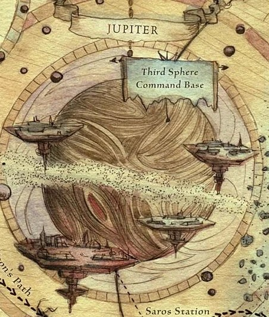
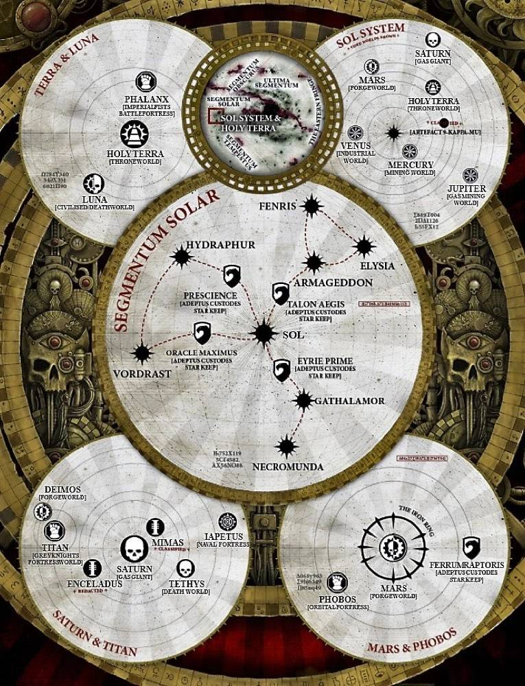

Sol System
| Sol System | |
|---|---|
| Home system of humanity | |
 An Administratum orrery-chart of the Sol System | |
| Star | Sol |
| Segmentum | Segmentum Solar (capital system) |
| Classification | Throneworld system; segmentum fortress |
| Ruler | The High Lords of Terra, under the Emperor of Mankind and the Lord Commander, Roboute Guilliman; Mars under the Fabricator-General |
| Population | Hundreds of billions (unrecorded) |
| Capital | Terra, Imperial Palace |
| Principal worlds | Terra and Luna; Mars; Venus; Mercury; Jupiter; Saturn and Titan; Pluto |
| Defence | Battlefleet Solar; the Imperial Fists and the Phalanx; the Adeptus Custodes; the Grey Knights |
The Sol System, often called simply Sol and in old records the Solar System, is the star system in which humanity arose. It contains Terra, the Throneworld of the Imperium of Mankind, and Mars, the homeworld of the Adeptus Mechanicus, as well as Luna, the gas giants Jupiter and Saturn, and Saturn's moon Titan, fortress of the Grey Knights. It is the capital of the Segmentum Solar and the most heavily defended system in the galaxy.[1]
Every age of human history has passed through the system. It was unified by the Emperor of Mankind at the end of the Age of Strife, besieged by the traitor Legions in the Siege of Terra, invaded by Orks in the War of the Beast, and has remained the heart of the Imperium for ten thousand years. In the Era Indomitus it lies close to the Great Rift and is the seat of the reforms of Roboute Guilliman.[2][3]
History
[edit]Ancient history
[edit]Humanity spread from Terra to the other worlds of the system in the deep past, long before the Dark Age of Technology. Mars, Luna and the moons of the gas giants were settled and, in some cases, terraformed. During the Dark Age the Sol System was the centre of a human civilisation that spanned much of the galaxy. When that civilisation collapsed in the Age of Strife, warp storms isolated the system for thousands of years. Terra fell to warring techno-barbarians, Mars became a closed technocracy, and the other worlds were lost, abandoned or seized by local powers.[2][4]
Unification
[edit]The Emperor first united Terra in the Unification Wars, then concluded the Treaty of Olympus with Mars in c. 739.M30. The other worlds of the system were then brought under Imperial rule. On Luna the gene-wrights of the Selenar cults were subdued, and their gene-craft was used in the making of the Space Marine Legions. The Mechanicum's shipyards in the Ring of Iron and the orbital docks of Jupiter built the fleets of the Great Crusade, which departed from the system in 798.M30.[2][5]
The Horus Heresy
[edit]
When the Horus Heresy broke out, the Praetorian of Terra, Rogal Dorn, fortified the entire system. Its outer worlds and moons were turned into fortresses, its fleets were concentrated, and its approaches were mined. Mars was lost to the loyalists in the Schism of Mars and was blockaded by loyal forces. Early in the war the Alpha Legion attacked Pluto and its monitoring stations, in a raid that tested the defences of the system.[6]
The traitor host of Horus reached the Sol System in 013.M31. In the fighting called the Solar War, the traitor fleets broke through the outer defences, the Iron Warriors of Perturabo reduced the system's fortresses one after another, and the loyalist fleets were forced back on Terra. The traitors then engaged the Mars blockade and the defences of Luna and Terra before landing on the Throneworld. The Siege of Terra followed.[6][a]
The Imperial age
[edit]After the Heresy, the Sol System became the seat of the High Lords of Terra and of the Adeptus Terra, and its defence was entrusted to the Imperial Fists and their Successors, the Adeptus Custodes, the Sisters of Silence and Battlefleet Solar. The Grey Knights were founded in secret on Titan.[1]
In M32 the War of the Beast brought the Orks into the system. A vast Ork attack moon reached Terra and was destroyed only after the Imperial Fists had been nearly annihilated elsewhere and the system's defences had been overrun. Mars was drawn into the war, and its experiments with Ork technology were exposed. The war led to the reform of the High Lords and to the Imperium's adoption of the doctrine that no enemy should ever again reach the system so easily.[7]
In the following millennia the system was threatened by rebellions, schisms and the ambitions of its own rulers, among them the Age of Apostasy, when the High Lord Goge Vandire ruled from Terra, and the Nova Terra Interregnum. In 998.M41 Necron cruisers passed the system's outer defences undetected and attacked the mines of Mars before they were destroyed.[1][4]
The Era Indomitus
[edit]The Great Rift opened in 999.M41, and the Sol System found itself close to the edge of the Imperium Sanctus. The Astronomican still shines from Terra and guides the fleets of the Imperium. Guilliman returned to the system at the end of the Terran Crusade, was received in the Imperial Palace, and launched the Indomitus Crusade from Terra. The system's shipyards, above all those of Mars and Jupiter, have since worked to supply the crusade, and its defences have been enlarged.[3]
Bodies
[edit]
| Body | Classification | Notes |
|---|---|---|
| Sol | Star | The home star of humanity |
| Mercury | Mining world | Innermost planet |
| Venus | Industrial world | Heavily industrialised |
| Terra | Throneworld | Seat of the Emperor and the Imperial Palace |
| Luna | Civilised world; death world in part | Moon of Terra; ancient gene-laboratories |
| Mars | Forge world | Homeworld of the Adeptus Mechanicus |
| Phobos | Orbital fortress | Moon of Mars |
| Jupiter | Gas mining world | Orbital shipyards and command bases |
| Saturn | Gas giant | Moons include Titan, Deimos, Iapetus, Tethys and others |
| Titan | Fortress world | Fortress-monastery of the Grey Knights |
| Deimos | Forge world | Former moon of Mars, now in Saturn's orbit |
| Iapetus | Naval fortress | Moon of Saturn |
| Uranus and Neptune | Gas giants | Outer defences |
| Pluto | Fortress | Outer monitoring stations; attacked in the Heresy |
Some bodies of the system, among them the Saturnine moons Mimas and Enceladus, are marked as classified on Imperial charts, and nothing is recorded of their purpose. The Phalanx, the mobile star fortress of the Imperial Fists, has often been stationed in the system, in orbit of Terra.[1]
Several fortress-stations of the Adeptus Custodes stand on the approaches to the system and in the wider Segmentum Solar, guarding the routes to Terra.[1]
Government and defence
[edit]The Sol System is governed by the High Lords of Terra, who sit in the Imperial Palace. Mars is governed by the Fabricator-General under the Treaty of Olympus, and Titan is the domain of the Grey Knights. The worlds and stations of the system are among the most closely administered in the Imperium, with every voyage into or out of the system logged and every ship inspected.[1]
The system's defences include the ships of Battlefleet Solar, minefields, orbital battle stations, the fortress moons of the outer system, the Ring of Iron, and the garrisons of Terra. The Imperial Fists and their Successors are pledged to the defence of the system, and the Adeptus Custodes guard the Palace itself. No ship may approach Terra without the Palace's permission.[1]
Society
[edit]The populations of the Sol System are among the largest in the Imperium. Terra's hives hold many tens of billions, Mars about twenty billion and the industrial and mining worlds many more. Pilgrims from every part of the Imperium travel to the system, and the Ecclesiarchy maintains hospices for them throughout it. The system's people serve the Imperium's central institutions as scribes, servants, soldiers and workers, and many never leave the world of their birth.[8][1]
To the faithful the whole system is holy, since it holds the Emperor on his Golden Throne, and the journey to Sol is the greatest pilgrimage an Imperial citizen can make. To the Mechanicus, Mars is the holier world. The relationship between Terra and Mars has defined the politics of the system since the Treaty of Olympus.[8][4]
Timeline
[edit]| Date | Event |
|---|---|
| Age of Technology | The Sol System's worlds are colonised, and Terra is the capital of Mankind's first galactic civilisation.[b] |
| Age of Strife | The Sol System is isolated by Warp storms and its colonies fall away from Terra. |
| Late M29–M30 | The Unification Wars unite Terra, and the Emperor makes the Sol System the seat of his rule. |
| Late M30 | The Treaty of Olympus binds the Mechanicum of Mars to the Emperor, and the Astronomican is lit. |
| 798.M30 | The Great Crusade launches from the Sol System to reunite the lost Human worlds. |
| 005.M31 | The Horus Heresy begins at Isstvan III, and the Schism of Mars divides the forge worlds of the Sol System. |
| 013–014.M31 | The Siege of Terra is fought in the Sol System; Titan is taken into the Warp before the final battle.[c] |
| 999.M41 | The Battle of Lion's Gate on Terra, and the Terran Crusade reaches the Sol System. |
| Early M42 | The Sol System is the heart of the Imperium of Mankind, and the Indomitus Crusade assembles in its orbit. |
See also
[edit]Notes
[edit]References
[edit]- ^ a b c d e f g h Codex Imperialis (rev. 980.M41). Adeptus Terra.
- ^ a b c Liber Primarchus (M32, revised M41). Administratum Archive, Terra.
- ^ a b Records of the Indomitus Crusade (ongoing). Office of the Lord Commander.
- ^ a b c Liber Martis: Chronicles of the Red Planet (rev. M41). Temple of All Knowledge, Mars.
- ^ Annals of the Unification (M31). Logos Historica Verita, Terra.
- ^ a b Chronicles of the Heresy (sealed). Logos Historica Verita, Terra.
- ^ The Beast Arises: A History (M33). Adeptus Terra.
- ^ a b Liber Ecclesiasticus (M37). Adeptus Ministorum.